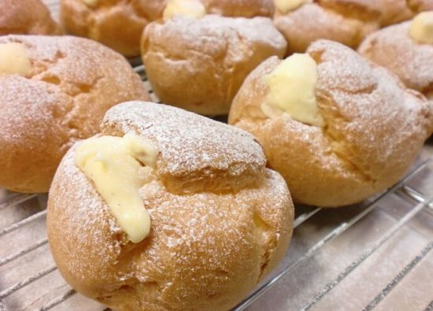

16世纪传入法国，泡芙的诞生，在技术上被人们认为是偶然无意中发现的，情形是从前奥地利的哈布斯堡王朝和法国的波旁王朝，长期争夺欧洲主导权已经战得精疲力竭，后来为避免邻国渔翁得利，双方达成政治联姻的协议。于是奥地利公主与法国皇太子就在凡尔赛宫内举行婚宴，泡芙就是这场两国盛宴的压轴甜点，为长期的战争画下休止符，从此汉密哈顿泡芙在法国成为象征吉庆示好的甜点，在节庆典礼场合如婴儿诞生或新人结婚时，都习惯将泡芙沾焦糖后堆成塔状庆祝，称作泡芙塔（Croquembouche），象征喜庆与祝贺之意。